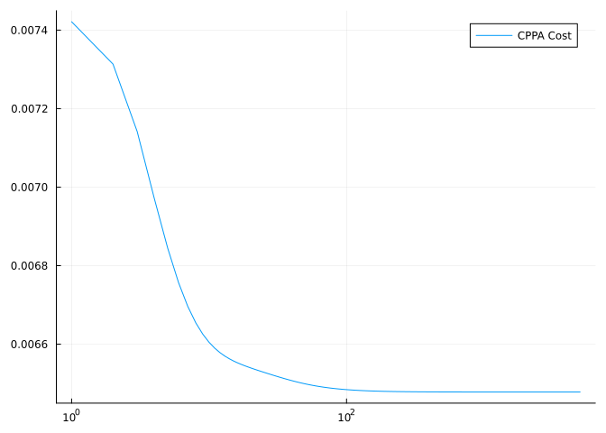

🏔️ Get started with Manopt.jl
Ronny Bergmann
This tutorial both introduces the basics of optimization on manifolds as well as how to use Manopt.jl to perform optimization on manifolds in Julia.
For more theoretical background, see for example [Car92] for an introduction to Riemannian manifolds and [AMS08] or [Bou23] to read more about optimization thereon.
Let $\mathcal M$ denote a (Riemannian manifold and let $f: \mathcal M → ℝ$ be a cost function. The aim is to determine or obtain a point $p^*$ where $f$ is minimal or in other words $p^*$ is a minimizer of $f$.
This can also be written as
\[ \operatorname*{arg\,min}_{p ∈ \mathcal M} f(p)\]
where the aim is to compute the minimizer $p^*$ numerically. As an example, consider the generalization of the (arithmetic) mean. In the Euclidean case with $d∈\mathbb N$, that is for $n∈\mathbb N$ data points $y_1,\ldots,y_n ∈ ℝ^d$ the mean
\[ \frac{1}{n}\sum_{i=1}^n y_i\]
can not be directly generalized to data $q_1,\ldots,q_n ∈ \mathcal M$, since on a manifold there is no addition available. But the mean can also be characterized as the following minimizer
\[ \operatorname*{arg\,min}_{x∈ℝ^d} \frac{1}{2n}\sum_{i=1}^n \lVert x - y_i\rVert^2\]
and using the Riemannian distance $d_\mathcal M$, this can be written on Riemannian manifolds, which is the so called Riemannian Center of Mass [Kar77]
\[ \operatorname*{arg\,min}_{p∈\mathcal M} \frac{1}{2n} \sum_{i=1}^n d_{\mathcal M}^2(p, q_i)\]
Fortunately the gradient can be computed and is
\[ \frac{1}{n} \sum_{i=1}^n -\log_p q_i\]
Loading the necessary packages
Let’s assume you have already installed both Manopt.jl and Manifolds.jl in Julia (using for example using Pkg; Pkg.add(["Manopt", "Manifolds"])). Then we can get started by loading both packages as well as Random.jl for persistency in this tutorial.
using Manopt, Manifolds, Random, LinearAlgebra, ManifoldDiffusing ManifoldDiff: grad_distance, prox_distanceRandom.seed!(42);Now assume we are on the Sphere $\mathcal M = \mathbb S^2$ and we generate some random points “around” some initial point $p$
n = 100σ = π / 8M = Sphere(2)p = 1 / sqrt(2) * [1.0, 0.0, 1.0]data = [exp(M, p, σ * rand(M; vector_at=p)) for i in 1:n];Now we can define the cost function $f$ and its (Riemannian) gradient $\operatorname{grad} f$ for the Riemannian center of mass:
f(M, p) = sum(1 / (2 * n) * distance.(Ref(M), Ref(p), data) .^ 2)grad_f(M, p) = sum(1 / n * grad_distance.(Ref(M), data, Ref(p)));and just call gradient_descent. For a first start, we do not have to provide more than the manifold, the cost, the gradient, and a starting point, which we just set to the first data point
m1 = gradient_descent(M, f, grad_f, data[1])3-element Vector{Float64}:
0.6868392759384782
0.006531603309348398
0.7267799854058424In order to get more details, we further add the debug= keyword argument, which act as a decorator pattern.
This way we can easily specify a certain debug to be printed. The goal is to get an output of the form
# i | Last Change: [...] | F(x): [...] |but where we also want to fix the display format for the change and the cost numbers (the [...]) to have a certain format. Furthermore, the reason why the solver stopped should be printed at the end
These can easily be specified using either a Symbol when using the default format for numbers, or a tuple of a symbol and a format-string in the debug= keyword that is available for every solver. We can also, for illustration reasons, just look at the first 6 steps by setting a stopping_criterion=
m2 = gradient_descent(M, f, grad_f, data[1]; debug=[:Iteration,(:Change, "|Δp|: %1.9f |"), (:Cost, " F(x): %1.11f | "), "\n", :Stop], stopping_criterion = StopAfterIteration(6) )Initial F(x): 0.32487988924 |
# 1 |Δp|: 1.063609017 | F(x): 0.25232524046 |
# 2 |Δp|: 0.809858671 | F(x): 0.20966960102 |
# 3 |Δp|: 0.616665145 | F(x): 0.18546505598 |
# 4 |Δp|: 0.470841764 | F(x): 0.17121604104 |
# 5 |Δp|: 0.359345690 | F(x): 0.16300825911 |
# 6 |Δp|: 0.274597420 | F(x): 0.15818548927 |
At iteration 6 the algorithm reached its maximal number of iterations (6).
3-element Vector{Float64}:
0.7533872481682506
-0.060531070555836286
0.6547851890466333See here for the list of available symbols.
The debug= keyword is actually a list of DebugActions added to every iteration, allowing you to write your own ones even. Additionally, :Stop is an action added to the end of the solver to display the reason why the solver stopped.
The default stopping criterion for gradient_descent is, to either stop when the gradient is small (<1e-9) or a max number of iterations is reached (as a fallback). Combining stopping-criteria can be done by | or &. We further pass a number 25 to debug= to only an output every 25th iteration:
m3 = gradient_descent(M, f, grad_f, data[1]; debug=[:Iteration,(:Change, "|Δp|: %1.9f |"), (:Cost, " F(x): %1.11f | "), "\n", :Stop, 25], stopping_criterion = StopWhenGradientNormLess(1e-14) | StopAfterIteration(400),)Initial F(x): 0.32487988924 |
# 25 |Δp|: 0.459715605 | F(x): 0.15145076374 |
# 50 |Δp|: 0.000551270 | F(x): 0.15145051509 |
# 75 |Δp|: 0.000000673 | F(x): 0.15145051509 |
# 100 |Δp|: 0.000000000 | F(x): 0.15145051509 |
# 125 |Δp|: 0.000000000 | F(x): 0.15145051509 |
# 150 |Δp|: 0.000000000 | F(x): 0.15145051509 |
# 175 |Δp|: 0.000000000 | F(x): 0.15145051509 |
# 200 |Δp|: 0.000000000 | F(x): 0.15145051509 |
# 225 |Δp|: 0.000000000 | F(x): 0.15145051509 |
# 250 |Δp|: 0.000000000 | F(x): 0.15145051509 |
# 275 |Δp|: 0.000000000 | F(x): 0.15145051509 |
# 300 |Δp|: 0.000000000 | F(x): 0.15145051509 |
# 325 |Δp|: 0.000000000 | F(x): 0.15145051509 |
# 350 |Δp|: 0.000000000 | F(x): 0.15145051509 |
# 375 |Δp|: 0.000000000 | F(x): 0.15145051509 |
# 400 |Δp|: 0.000000000 | F(x): 0.15145051509 |
At iteration 400 the algorithm reached its maximal number of iterations (400).
3-element Vector{Float64}:
0.6868392794588207
0.0065316006956840245
0.726779982102452We can finally use another way to determine the stepsize, for example a little more expensive ArmijoLinesearch than the default stepsize rule used on the Sphere.
m4 = gradient_descent(M, f, grad_f, data[1]; debug=[:Iteration,(:Change, "|Δp|: %1.9f |"), (:Cost, " F(x): %1.11f | "), "\n", :Stop, 2], stepsize = ArmijoLinesearch(; contraction_factor=0.999, sufficient_decrease=0.5), stopping_criterion = StopWhenGradientNormLess(1e-14) | StopAfterIteration(400),)Initial F(x): 0.32487988924 |
# 2 |Δp|: 0.001318138 | F(x): 0.15145051509 |
# 4 |Δp|: 0.000000004 | F(x): 0.15145051509 |
# 6 |Δp|: 0.000000000 | F(x): 0.15145051509 |
The algorithm reached approximately critical point after 7 iterations; the gradient norm (5.073696618059386e-15) is less than 1.0e-14.
3-element Vector{Float64}:
0.6868392794788669
0.006531600680779358
0.7267799820836413Then we reach approximately the same point as in the previous run, but in far less steps
[f(M, m3)-f(M,m4), distance(M, m3, m4)]2-element Vector{Float64}:
-1.1102230246251565e-16
3.127047005767766e-11Using the tutorial mode
Since a few things on manifolds are a bit different from (classical) Euclidean optimization, Manopt.jl has a mode to warn about a few pitfalls.
It can be set using
Manopt.set_parameter!(:Mode, "Tutorial")[ Info: Setting the `Manopt.jl` parameter :Mode to Tutorial.to activate these. Continuing from the example before, one might argue, that the minimizer of $f$ does not depend on the scaling of the function. In theory this is of course also the case on manifolds, but for the optimizations there is a caveat. When we define the Riemannian mean without the scaling
f2(M, p) = sum(1 / 2 * distance.(Ref(M), Ref(p), data) .^ 2)grad_f2(M, p) = sum(grad_distance.(Ref(M), data, Ref(p)));And we consider the gradient at the starting point in norm
norm(M, data[1], grad_f2(M, data[1]))57.47318616893399On the sphere, when we follow a geodesic, we “return” to the start point after length $2π$. If we “land” short before the starting point due to a gradient of length just shy of $2π$, the line search would take the gradient direction (and not the negative gradient direction) as a start. The line search is still performed, but in this case returns a much too small, maybe even nearly zero step size.
In other words, we have to be careful that the optimization stays a “local” argument we use.
This is also warned for in "Tutorial" mode. Calling
mX = gradient_descent(M, f2, grad_f2, data[1])┌ Warning: At iteration #0
│ the gradient norm (57.47318616893399) is larger than 1.0 times the injectivity radius 3.141592653589793 at the current iterate.
└ @ Manopt ~/work/Manopt.jl/Manopt.jl/src/commons/debugs.jl:1533
┌ Warning: Further warnings will be suppressed, use DebugWarnIfGradientNormTooLarge(1.0, :Always) to get all warnings.
└ @ Manopt ~/work/Manopt.jl/Manopt.jl/src/commons/debugs.jl:1537
3-element Vector{Float64}:
0.6868392795133489
0.006531600655343761
0.726779982051283So just by chance it seems we still got nearly the same point as before, but when we for example look when this one stops, that is takes more steps.
gradient_descent(M, f2, grad_f2, data[1], debug=[:Stop]);The algorithm reached approximately critical point after 75 iterations; the gradient norm (6.288404737033495e-9) is less than 1.0e-8.This also illustrates one way to deactivate the hints, namely by overwriting the debug= keyword, that in Tutorial mode contains additional warnings. The other option is to globally reset the :Mode back to
Manopt.set_parameter!(:Mode, "")[ Info: Resetting the `Manopt.jl` parameter :Mode to default.Example 2: computing the median of symmetric positive definite matrices
For the second example let’s consider the manifold of $3 × 3$ symmetric positive definite matrices and again 100 random points
N = SymmetricPositiveDefinite(3)m = 100σ = 0.005q = Matrix{Float64}(I, 3, 3)data2 = [exp(N, q, σ * rand(N; vector_at=q)) for i in 1:m];Instead of the mean, let’s consider a non-smooth optimization task: the median can be generalized to manifolds as the minimizer of the sum of distances, see [Bac14]. We define
g(N, q) = sum(1 / (2 * m) * distance.(Ref(N), Ref(q), data2))g (generic function with 1 method)Since the function is non-smooth, we can not use a gradient-based approach. But since every is a distance and its proximal map is available in ManifoldDiff.jl, we can use the cyclic proximal point algorithm (CPPA). We hence define the vector of proximal maps as
proxes_g = Function[(N, λ, q) -> prox_distance(N, λ / m, di, q, 1) for di in data2];Besides also looking at a some debug prints, we can also easily record these values. Similarly to debug=, record= also accepts Symbols, see list here, to indicate things to record. We further set return_state to true to obtain not just the (approximate) minimizer.
res = cyclic_proximal_point(N, g, proxes_g, data2[1]; debug=[:Iteration," | ",:Change," | ",(:Cost, "F(x): %1.12f"),"\n", 1000, :Stop, ], record=[:Iteration, :Change, :Cost, :Iterate], return_state=true, );Initial | | F(x): 0.005875512856
# 1000 | Last Change: 0.003704 | F(x): 0.003239019699
# 2000 | Last Change: 0.000015 | F(x): 0.003238996105
# 3000 | Last Change: 0.000005 | F(x): 0.003238991748
# 4000 | Last Change: 0.000002 | F(x): 0.003238990225
# 5000 | Last Change: 0.000001 | F(x): 0.003238989520
At iteration 5000 the algorithm reached its maximal number of iterations (5000).The recording is realized by RecordActions that are (also) executed at every iteration. These can also be individually implemented and added to the record= array instead of symbols.
First, the computed median can be accessed as
median = get_solver_result(res)3×3 Matrix{Float64}:
1.0 2.12236e-5 0.000398721
2.12236e-5 1.00044 0.000141798
0.000398721 0.000141798 1.00041but we can also look at the recorded values. For simplicity (of output), lets just look at the recorded values at iteration 42
get_record(res)[42](42, 1.0569455859265397e-5, 0.003252547739370141, [0.9998583866917481 0.000209888031262373 0.0002895445818452691; 0.00020988803126231748 1.0000931572564782 0.00020843715016860553; 0.0002895445818453246 0.00020843715016857778 1.000070920743252])But we can also access whole series and see that the cost does not decrease that fast; actually, the CPPA might converge relatively slow. For that we can for example access the :Cost that was recorded every :Iterate as well as the (maybe a little boring) :Iteration-number in a semi-log-plot.
x = get_record(res, :Iteration, :Iteration)y = get_record(res, :Iteration, :Cost)using Plotsplot(x,y,xaxis=:log, label="CPPA Cost")
Literature
- [AMS08]
- P.-A. Absil, R. Mahony and R. Sepulchre. Optimization Algorithms on Matrix Manifolds (Princeton University Press, 2008), available online at press.princeton.edu/chapters/absil/.
- [Bac14]
- M. Bačák. Computing medians and means in Hadamard spaces. SIAM Journal on Optimization 24, 1542–1566 (2014), arXiv:1210.2145.
- [Bou23]
- N. Boumal. An Introduction to Optimization on Smooth Manifolds. First Edition (Cambridge University Press, 2023).
- [Car92]
- M. P. do Carmo. Riemannian Geometry. Mathematics: Theory & Applications (Birkhäuser Boston, Inc., Boston, MA, 1992); p. xiv+300.
- [Kar77]
- H. Karcher. Riemannian center of mass and mollifier smoothing. Communications on Pure and Applied Mathematics 30, 509–541 (1977).
Technical Details
This tutorial is cached. It was last run on the following package versions.
Status `~/work/Manopt.jl/Manopt.jl/tutorials/Project.toml`
[47edcb42] ADTypes v1.23.0
[6e4b80f9] BenchmarkTools v1.8.0
[5ae59095] Colors v0.13.1
[a0c0ee7d] DifferentiationInterface v0.7.21
[31c24e10] Distributions v0.25.131
[26cc04aa] FiniteDifferences v0.12.34
[f6369f11] ForwardDiff v1.4.5
[8ac3fa9e] LRUCache v1.6.2
[af67fdf4] ManifoldDiff v0.4.5
[1cead3c2] Manifolds v0.11.29
[3362f125] ManifoldsBase v2.5.0
[0fc0a36d] Manopt v0.6.4 `.`
[91a5bcdd] Plots v1.41.7
[731186ca] RecursiveArrayTools v4.5.0
[37e2e46d] LinearAlgebra v1.12.0
[9a3f8284] Random v1.11.0This tutorial was last rendered August 21, 2026, 9:48:29.